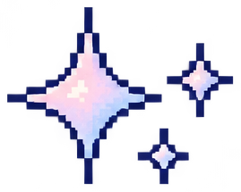
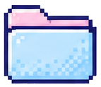

I put the fun back in fundamentals.
I'm a learning designer and former classroom teacher who builds games, eLearning, and materials that learners don't groan at.
Featured work

Browse by section
Let's work together
I'm looking for instructional design, curriculum, and learning experience roles. Remote works great.
Hi, I'm Gigi
I've spent eight years teaching K–5, mostly ELA and math, and six of those years I was also working as an RBT. That mix is a big part of how I design. Teaching taught me what makes kids check out. Behavior analysis taught me to look at what actually happens after someone tries something.
I also don't believe in making learning too easy. I think we underestimate kids, and honestly adults too. Give people something real to figure out, help them when they're stuck, and they'll surprise you.
These days I make learning games, eLearning, and classroom materials. I have a master's in curriculum and instruction, a bachelor's in psychology, and a UI/UX certificate, so I usually design the whole thing, from the lesson to the screen. I'm also bilingual in English and Spanish.
- Learning games for kids
- Scenario-based eLearning
- Curriculum and lesson writing
- Assessment and feedback design
- UI and visual design
- Accessible design
- Articulate Storyline & Rise
- Figma
- Canva
- Adobe Creative Cloud
- Procreate
- HTML, CSS & JavaScript
- Microsoft Word, PowerPoint & Excel
- Google Workspace & Classroom
- 2023–nowCurriculum developer & instructional designer, independent
- 2023–24Digital learning specialist, CUES. Quality checks on course content with subject matter experts.
- 2019–26Lead teacher, K–5, private and charter schools in Miami-Dade. Trained the other teachers.
- 2020–26Registered Behavior Technician, Progressive Behavior Science
- 2025M.A. Curriculum and Instruction, WGU
- 2024UI/UX Design certificate, Avocademy
- 2022B.A. Psychology, University of West Florida
Resume
The short version is below. The full one is a click away.
Gisselle Echevarria
Curriculum Developer · Instructional Designer · K–5 Educator · Bilingual (English/Spanish)
Experience
Design, build, and publish standards-aligned K–5 ELA and math resources and browser-based learning games, from needs analysis to release. Freelance web and UI design for education clients.
Edited and tested online course materials and assessments, and partnered with subject matter experts to align content to learning objectives.
Delivered one-to-one skill acquisition and behavior support programs, and collected and graphed session data.
Planned and taught K–5 classes of 8 to 20 students with original lessons, ran reading intervention, and helped colleagues adopt new strategies.
Education & certifications
Want to work together?
I'm open to instructional design, curriculum, and learning experience roles, plus freelance projects. Say hi!
- > Emailgisselle.echevarria97@gmail.com
- > LinkedInlinkedin.com/in/gisselle-echevarria
- > LocationSouth Florida · open to remote